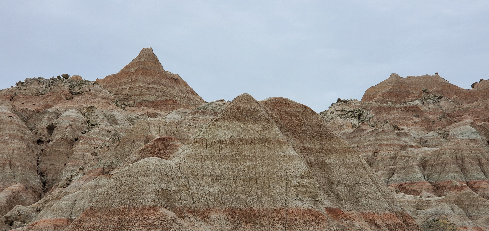
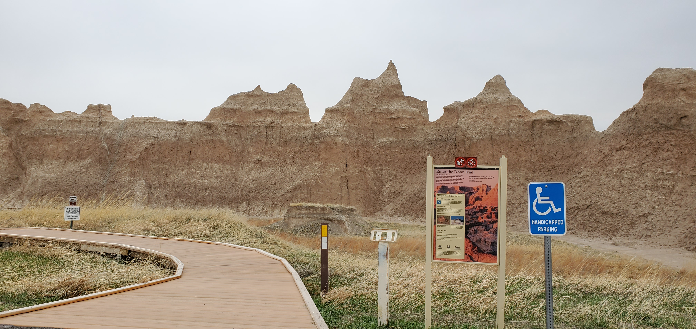
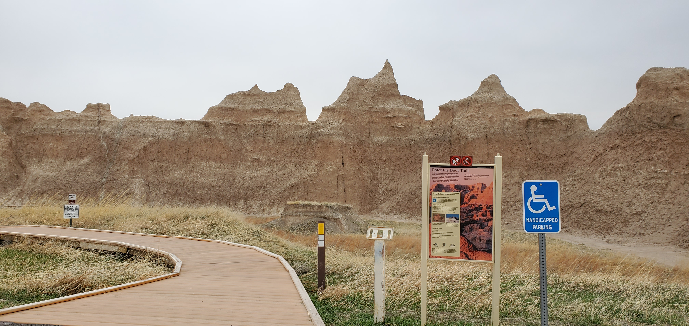

Wind of Change
Last night it snowed a little, but by morning it melted and dried out. Finally I made it to the Badlands National Park. The park was pretty, although some road construction was going on. I also changed my car's wiper today. I stopped at an Auto Zone at Rapid City. There was a nice guy at the store who not only helped me find out the right wipers but also put it on my car. I am no longer afraid of rain! I spotted a funny name for a place today: Crazy Woman Creek. The landscape became very pretty when towards the end of South Dakota and kept getting prettier throughout Wyoming, with big mountains covered by snow, as if I am feeling the wind of change!
I bought an annual national park pass today: America the Beautiful. Looking forward to visit a number of national parks a number of times in next 12 months.
Dayton is an amazingly beautiful small town near the Bighorn National Forest. A lady at a store told me that it is a secret heaven and I shouldn't tell about it to anyone!
Today's airbnb was the best so far, according to my preferences. It is a minimalistic cabin and extremely clean, quiet, and pretty.
I took a video and a number of pictures today at Badlands National Park. I am posting them here.
 
